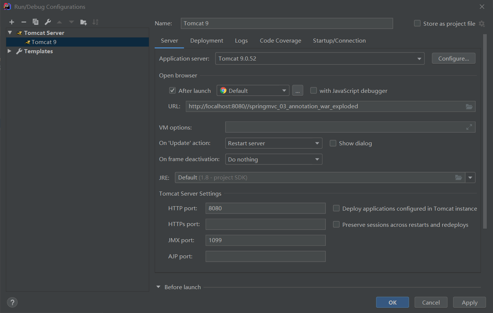
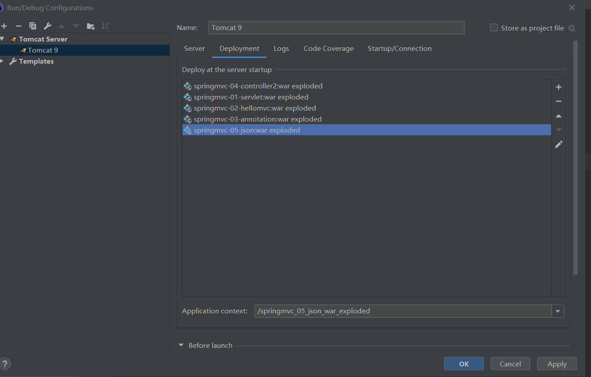
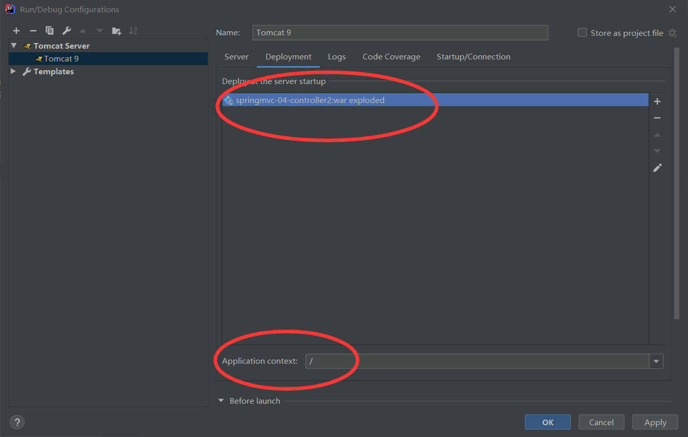
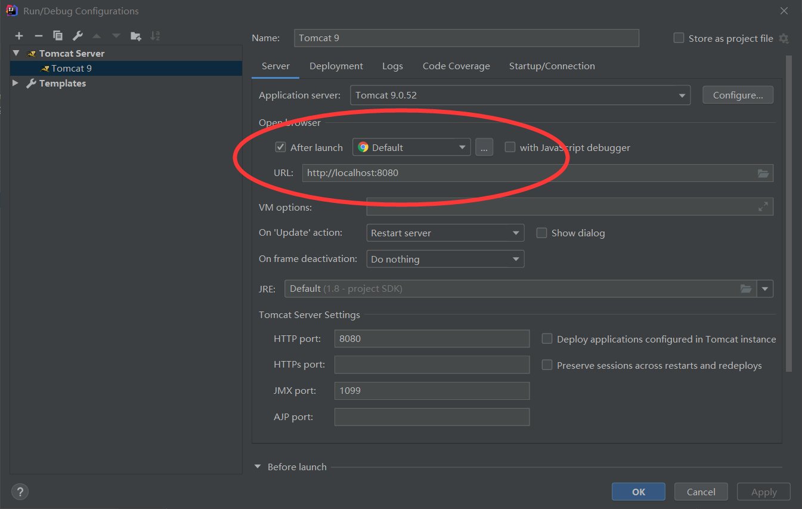

软件版本为IDEA 2020.1 ，Tomcat 9
遇到的问题是在看狂神说Java中SpringMVC模块视频中的问题。
问题
如图所示


在IDEA默认的定义方法中，访问某一个项目是需要一个特定的url：http://localhost:8080//springmvc_03_annotation_war_exploded
这个项目在提交表单跳转一些jsp页面时也会404，但是视频中却没有这种情况，他使用的url：http://localhost:8080来直接访问，去掉了项目名称。
解决方案

在Deployment中仅保留想访问的项目，其余无关子项目全部去掉，并且将Application context中改为/。

将Server中的URL改为http://localhost:8080即可正常访问，跳转页面也能正常进行。